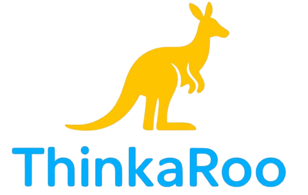

Desarrollar una plataforma web educativa que fortalezca el pensamiento lógico en niños de 3 a 7 años mediante actividades y juegos interactivos adaptados a su estilo de aprendizaje (visual, auditivo o kinestésico), promoviendo un aprendizaje personalizado, dinámico y motivador.
Somos un equipo comprometido con el desarrollo educativo infantil, dedicado a crear una plataforma interactiva que ayude a los niños de 3 a 7 años a fortalecer su pensamiento lógico mediante actividades, juegos y retos adaptados a su estilo de aprendizaje.
Nuestro objetivo es ofrecer una experiencia de aprendizaje divertida, segura y personalizada, permitiendo que cada niño aprenda a su propio ritmo mientras desarrolla habilidades como el razonamiento, la resolución de problemas, la concentración y la creatividad.
Creemos que aprender jugando es una de las mejores formas de potenciar el desarrollo infantil, por eso combinamos tecnología, educación y dinámicas interactivas para acompañar tanto a los niños como a sus padres en este proceso.
El aprendizaje visual es un estilo en el que los niños comprenden y retienen mejor la información mediante imágenes, colores, gráficos, dibujos y representaciones visuales. Los niños con este estilo suelen recordar con mayor facilidad aquello que observan, por lo que disfrutan de actividades que involucren elementos llamativos y organizados.
En nuestra plataforma, los niños con un estilo de aprendizaje visual encontrarán juegos y actividades diseñados para estimular su pensamiento lógico utilizando rompecabezas, secuencias de imágenes, asociaciones de figuras, patrones, colores y desafíos que requieren observar cuidadosamente para encontrar la respuesta correcta.
Cada actividad está organizada en niveles de dificultad progresiva, permitiendo que el niño avance a su propio ritmo mientras fortalece habilidades como la concentración, la memoria visual, la identificación de patrones y la resolución de problemas. Además, el sistema registra el progreso obtenido y recompensa cada logro para mantener la motivación durante el aprendizaje.
Nuestro objetivo es que los niños desarrollen su capacidad de analizar, comparar y relacionar información visual de forma divertida, convirtiendo el aprendizaje en una experiencia interactiva que favorezca su desarrollo cognitivo y su pensamiento lógico.
El aprendizaje auditivo se caracteriza porque los niños comprenden y recuerdan mejor la información cuando la escuchan. Las explicaciones habladas, los sonidos, las canciones, los diálogos y las narraciones les ayudan a procesar los conocimientos de una forma más natural y efectiva.
En nuestra plataforma, los niños con este estilo de aprendizaje encontrarán actividades que incluyen instrucciones narradas, reconocimiento de sonidos, secuencias auditivas, juegos de memoria sonora y ejercicios en los que deberán escuchar atentamente para resolver diferentes retos lógicos. Estas dinámicas favorecen la atención y la comprensión mientras convierten el aprendizaje en una experiencia entretenida.
Cada actividad está diseñada con un nivel de dificultad progresivo, permitiendo que los niños desarrollen habilidades como la concentración, la memoria auditiva, la capacidad de seguir instrucciones y el razonamiento lógico. Además, recibirán retroalimentación inmediata sobre su desempeño para reforzar su aprendizaje y mantener la motivación.
Nuestro objetivo es potenciar el pensamiento lógico mediante experiencias auditivas que despierten la curiosidad, fortalezcan la capacidad de análisis y permitan que cada niño aprenda de acuerdo con su forma natural de adquirir nuevos conocimientos, siempre en un ambiente seguro, dinámico y divertido.
El aprendizaje kinestésico se basa en la experiencia, el movimiento y la interacción con el entorno. Los niños que poseen este estilo de aprendizaje comprenden mejor los conceptos cuando pueden manipular objetos, realizar acciones y participar activamente en cada actividad, ya que aprenden haciendo y experimentando.
En nuestra plataforma, los niños encontrarán actividades dinámicas que requieren mover, arrastrar, ordenar y relacionar elementos para resolver distintos desafíos. También se propondrán misiones fuera de la pantalla que les permitirán aplicar lo aprendido en situaciones de la vida cotidiana, fortaleciendo el aprendizaje mediante la práctica.
Las actividades están organizadas por niveles para que cada niño avance según su progreso. A medida que superen los retos, desarrollarán habilidades como el razonamiento lógico, la coordinación, la resolución de problemas, la toma de decisiones y la creatividad, mientras reciben recompensas que mantienen su interés y motivación.
Nuestro propósito es ofrecer un entorno interactivo donde los niños puedan aprender de forma activa, explorando, experimentando y descubriendo soluciones por sí mismos. De esta manera, el aprendizaje se convierte en una experiencia divertida, significativa y adaptada a sus necesidades.